![Salle de bain moderne le soir en noir, blanc et crème : douche italienne avec paroi verrière noire et colonne de douche noire à pommeau carré, niche éclairée, meuble vasque suspendu en chêne à lattes avec vasque blanche à poser et robinet haut noir, miroir irrégulier à LED, colonne de rangement noire aux portes en arche, suspension dorée à trois globes de cristal, porte-serviettes doré avec serviettes blanches et noires, plantes tombantes, deux affiches abstraites noir et blanc, panier à linge en corde blanche et tapis effet marbre gris et or](../assets/img/looks/look012-salle-de-bain-noir-blanc.jpg)
Look n°12
Salle de bain noir et blanc, douche italienne
Une salle de bain moderne en noir, blanc et crème : douche italienne à verrière noire, meuble en chêne à lattes et touches dorées, le tout éclairé en blanc chaud. Voici les articles pour recréer cette ambiance chez toi.
Prix au 28/10/2026
-
Douche italienne : paroi verrière noire et colonne de douche
Paroi en verre transparent 6 mm, 90 × 200 cm, quadrillage noir style verrière d'atelier, avec sa barre de maintien noire (Schulte). Sur l'image, le quadrillage est un peu plus régulier. Colonne de douche noir mat : pommeau carré 30 × 30 cm, douchette et flexible, barre réglable de 68 à 108 cm (sans mitigeur).
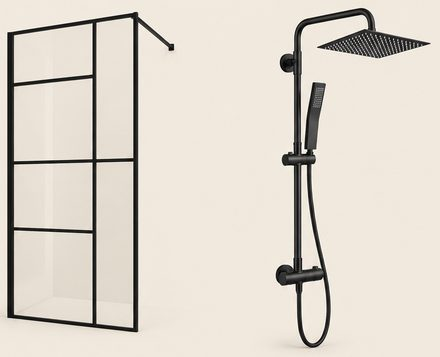
-
Meuble vasque suspendu en chêne à lattes et robinet noir
Meuble suspendu 60 × 45 × 50 cm, façade en lattes de chêne clair séparées par de fines rainures noires, 2 tiroirs, vasque blanche rectangulaire à poser fournie. Sur l'image, le meuble paraît beaucoup plus long (environ 1,50 m) : le vrai fait 60 cm de large. Robinet haut noir mat de 28 cm, bec droit, fait pour les vasques à poser.
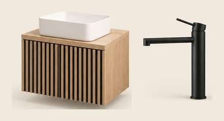
-
Miroir LED irrégulier, blanc chaud
45 × 100 cm, forme organique sans cadre, halo LED blanc chaud tout autour. Sur l'image, il paraît un peu plus grand.
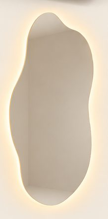
129,99 €Voir sur Amazon -
Colonne de rangement noire éclairée, portes en arche
30 × 40 × 170 cm, bois noir veiné, 2 portes en arche, poignées dorées, niche ouverte avec étagère en verre et éclairage LED (réglé ici en blanc chaud).
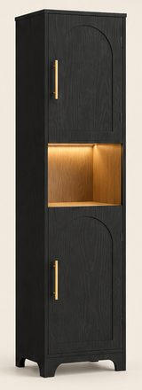
61,74 €Voir sur Amazon -
Porte-serviettes mural doré avec étagère
50 cm, inox doré brossé : une tablette pour les serviettes pliées et une double barre en dessous.
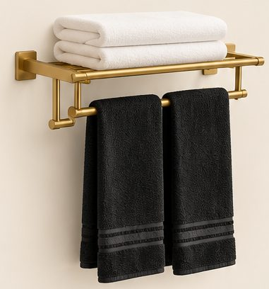
69,99 €Voir sur Amazon -
Serviettes de bain blanches et noires
70 × 140 cm, éponge de coton : un lot de 2 blanches et un lot de 2 noires à fines rayures.
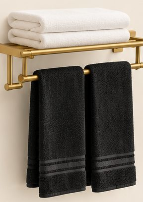
-
Suspension dorée à 3 globes de cristal
Rosace ronde dorée, 3 globes cylindriques en cristal strié de 13 × 25 cm, suspendus à des hauteurs différentes, douilles E27.
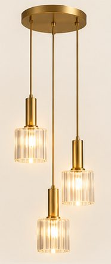
113,99 €Voir sur Amazon -
Ruban LED blanc chaud étanche, 5 m
Ruban COB 3000 K en ligne continue (sans points visibles), étanche IP65 pour la salle de bain. Sur l'image, il y en a à 3 endroits (niche de douche, dessous du meuble vasque, plafond au-dessus de la douche) : en prendre 2 pour tout faire.
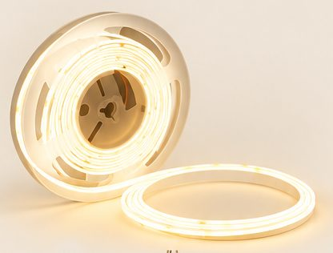
26,99 €Voir sur Amazon -
Accessoires en céramique marbrée dorée et bougies marbrées
6 pièces en céramique blanche veinée de doré : distributeur à pompe dorée, 2 gobelets, porte-savon et plateau à anses dorées. Avec 2 bougies parfumées en verre marbré, une noir et blanc et une blanc et gris (sur l'image, leurs verres sont un peu différents).
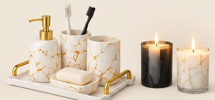
-
Plantes tombantes artificielles en pots noirs, lot de 3
Pots noirs ronds suspendus par des cordes en jute, feuillage retombant d'environ 50 cm. Aucun entretien, idéal dans une salle de bain.
21,31 €Voir sur Amazon -
2 affiches abstraites noir et blanc et leurs cadres noirs
Affiches 40 × 50 cm (lignes en arche, demi-cercles et cercle noirs), vendues sans cadre : on les glisse dans 2 cadres noirs fins 40 × 50 cm.
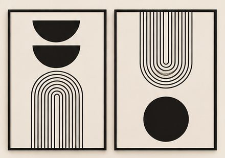
-
Panier à linge en corde de coton blanche
38 × 50 cm, corde de coton enroulée, 2 anses.
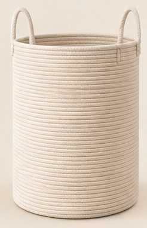
24,64 €Voir sur Amazon -
Tapis de bain ovale effet marbre gris et or
40 × 60 cm, motif marbre gris aux veines dorées, dessous en caoutchouc. Sur l'image, il paraît plus grand : le vrai fait 40 × 60 cm.
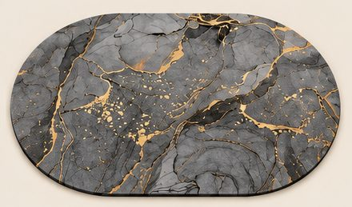
16,99 €Voir sur Amazon
Enregistrer ce look sur Pinterest
Image d'inspiration générée par IA. Prix indicatifs, revérifiés toutes les deux semaines.